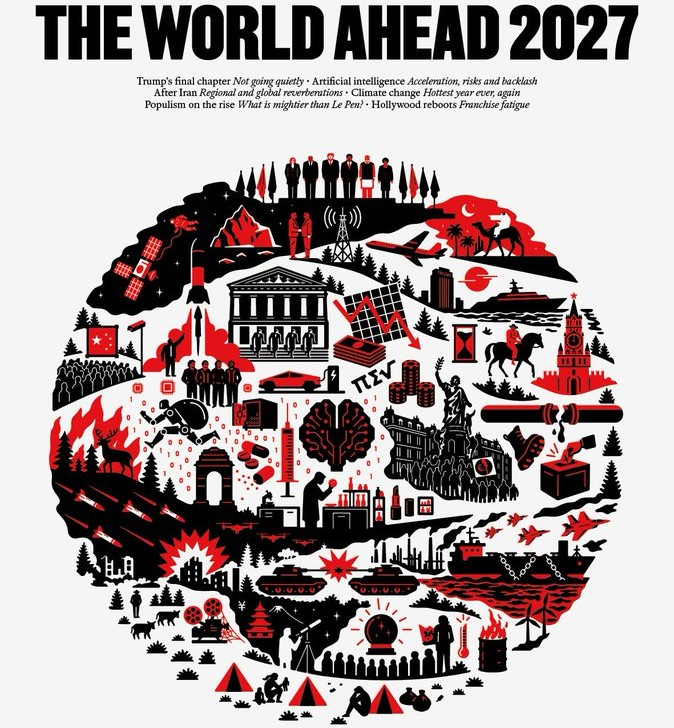

MUNDO · PERSPECTIVAS PARA 2027
The Economist presenta los asuntos que podrían marcar 2027
Conflictos internacionales, inteligencia artificial, economía y clima aparecen entre los temas examinados por la revista en su edición anual dedicada al futuro.

¿Qué es The World Ahead 2027?
La revista británica The Economist presentó la edición especial The World Ahead 2027, dedicada a analizar diez asuntos que podrían influir en el próximo año. MVS Noticias informó del lanzamiento el 16 de noviembre de 2026.
El objetivo de esta publicación es estudiar tendencias políticas, económicas y tecnológicas. No se trata de una lista de sucesos inevitables: son escenarios razonados que pueden cambiar por decisiones humanas y acontecimientos inesperados.
Cuatro grandes bloques de análisis
- Política internacional: relaciones entre potencias y efectos de conflictos.
- Tecnología: avances, inversiones y posibles reacciones sociales ante la IA.
- Economía: deuda pública, financiación y posibles tensiones en los mercados.
- Medio ambiente: cambio climático, calor extremo y riesgos para la seguridad alimentaria.
La publicación también contempla cuestiones como la competencia espacial y el futuro de industrias culturales. Estos temas permiten relacionar la tecnología con fenómenos sociales y económicos.
Cómo interpretar la portada con rigor
Las portadas ilustradas suelen reunir símbolos y personajes para provocar reflexión. Sin embargo, una imagen no puede demostrar que un conflicto o una crisis sucederá. Conviene acudir a las explicaciones de los autores y desconfiar de interpretaciones virales que presentan los dibujos como profecías.
Mi reflexión
Me interesa esta noticia porque conecta cuestiones que normalmente aparecen por separado: la economía, las decisiones políticas y el desarrollo de nuevas tecnologías. Analizar escenarios distintos también ayuda a preguntarnos qué información necesitamos antes de formarnos una opinión.